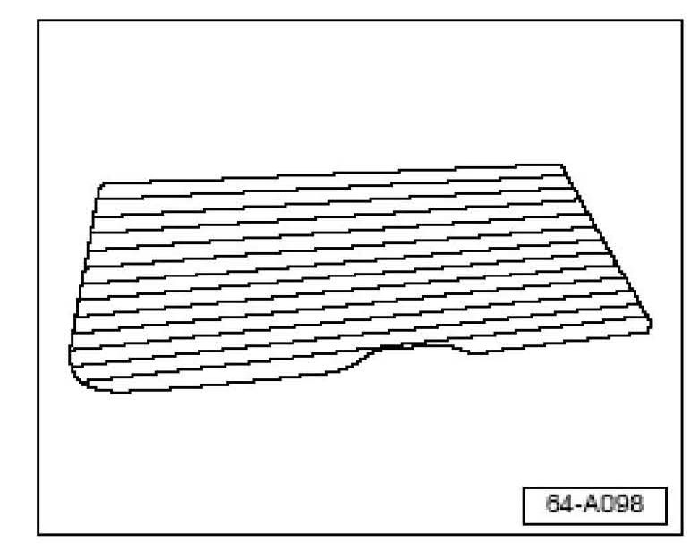
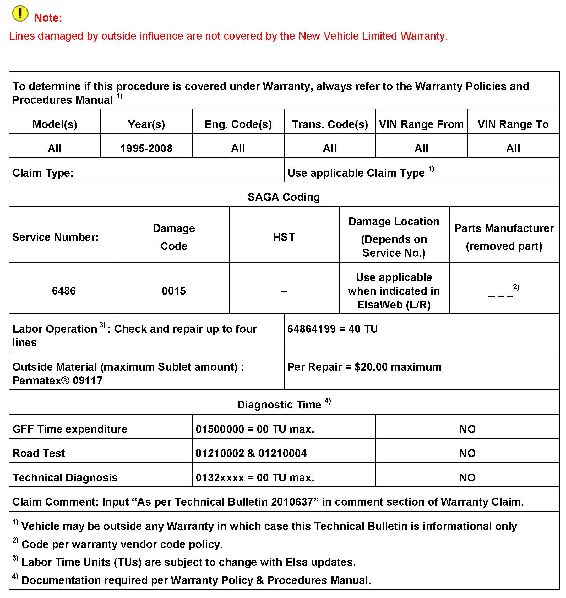
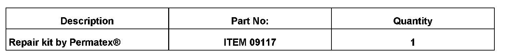

Electrical - One Or More Back Glass Defroster Grids Inop
64 10 05October 8, 2010
2010637 Supersedes T.B. V640801 dated Mar. 18, 2008 due to updated warranty table.

Vehicle Information
Heated Rear Window, One or More Lines Are Inoperative
One or more lines of the heated rear window -Z1- (rear window defogger) are inoperative.
Technical Background
May be caused by small gaps in the individual lines of the heating element.
Production Solution
No production change required.
Service

Check and identify gaps in inoperative lines as follows:
^ Ignition switch ON, engine running. Heated rear window switch ON.
Heated rear window, identifying gaps
Detect which line is inoperative by touching your hand to each line.
^ Working lines will be warm to the touch. Damaged line(s) will not generate heat.
Once damaged line is identified:
^ Switch ignition and heated rear window OFF.
^ Visually locate gap (open circuit)
^ Mark this location with tape and continue to check other lines as necessary.
With gap(s) in line(s) identified, repair as follows:
Heated Rear Window line, repairing using Repair kit by Permatex(R), ITEM 09117 (obtain locally)
Note
Repair should be performed on maximum of 4 lines.
The following are general instructions. Always read and follow the instructions of the product.
^ Ignition and heated rear window switches OFF.
^ Clean interior surface of rear window with glass cleaner.
^ Using transparent tape, place a strip of tape (approx. 25mm) horizontally on the top and bottom of the inoperative line(s) at the gap (do not cover the line or the gap with tape)
^ Shake the bottle of Permatex(R) well.
^ Apply Permatex(R) product (using a small brush) over the damage, extend repair approx. 6mm beyond the break in both directions.
^ Wait until product is dry (approx. 30 seconds).
^ Repeat application three times.
^ Remove tape after 30 minutes.
^ Wait 24 hours before switching the heated rear window ON.

Warranty

Required Parts and Tools
No Special Tools required.
Additional Information
All part and service references provided in this Technical Bulletin are subject to change and/or removal. Always check with your Parts Dept. and Repair Manuals for the latest information.